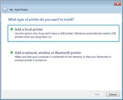
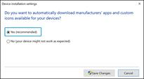
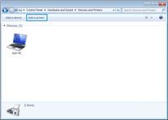

Instalacion y Configuracion de drivers y software dependiendo del usuario
La instalación de los programas computacionales (software) es el proceso fundamental por el cual los nuevos programas son transferidos a un computador con el fin de ser configurados, y preparados para ser desarrollados. Un programa recorre diferentes fases de desarrollo durante su vida útil:
- Programador: esto te sirve mucho para poder programar.
- Desarrollo: cada programador necesita el programa instalado, pero con las herramientas, códigos fuente, bancos de datos y etc, para modificar el programa.
- Prueba: antes de la entrega al usuario, el software debe ser sometido a pruebas. Esto se hace, en caso de software complejos, en una instalación ad hoc.
- Producción: Para ser utilizado por el usuario final.
En cada una de esas fases la instalación cumple diferentes objetivos. En español, programa sirve para señalar tanto un guion o archivo ejecutable, ejemplo tal como un conjunto de archivos que sirven un fin común, ejemplo LibreOffice. Por eso usaremos el neologismo software para programas computacionales.
Proceso de la instalación:
- Verificación de la compatibilidad: Se debe comprobar si se cumplen los requisitos para la instalación en cuanto a hardware y software. A veces es necesario desinstalar versiones antiguas del mismo software.
- Verificación de la integridad: Se verifica que el paquete de software es el original, esto se hace para evitar la instalación de programas maliciosos.
- Creación de los directorios requeridos: Para mantener el orden en el directorio cada sistema operativo puede tener un estándar para la instalación de ciertos archivos en ciertos directorios. Ver por ejemplo Linux Standard Base.
- Creación de los usuarios requeridos: Para deslindar responsabilidades y tareas se pueden o deben usar diferentes usuarios para diferentes paquetes de software.
- Concesión de los derechos requeridos: Para ordenar el sistema y limitar daños en caso necesario, se le conceden a los usuarios solo el mínimo necesario de derechos.
- Copia, desempaque y descompresión de los archivos desde el paquete de software: Para ahorrar Ancho de banda y tiempo en la transmisión por internet o espacio de Disco duro, los paquetes vienen empacados y comprimidos.
- Archivos principales, sean de fuente o binarios.
- Archivos de datos, por ejemplo datos, imágenes, modelos, documentos XML-Dokumente, etc.
- Documentación
- Archivos de configuración
- Bibliotecas
- Enlaces duros o enlaces simbólico a otros archivos
- Compilación y enlace con las bibliotecas requeridas: En algunos casos no se puede evitar el complicado paso de la compilación y enlace que a su vez tiene severos requerimientos de software al sistema. El enlace con bibliotecas requeridas puede ser un problema si en su instalación no se acataron los estándares establecidos.
- Configuración: Por medio de archivos de configuración se le da a conocer al software con que parámetros debe trabajar. Por ejemplo, los nombres de las personas que pueden usar el software, como verificar su clave de ingreso, la ruta donde se encuentran los archivos con datos o la dirección de nuestro proveedor de correo electrónico. Para sistemas complejos se debe desarrollar el Software Configuration Management.
- Definir las variables de entorno requeridas: Algunos comportamientos del software solo pueden ser determinados por medio de estas variables. Esto es parte de la configuración, aunque es más dinámica.
- Registro ante el dueño de la marca: Para el Software comercial a veces el desarrollador de software exige el registro de la instalación si se desea su servicio.
Término de la instalación:
- Si un sistema de gestión de paquetes realiza paquetes de software del sistema.
- En caso de que bibliotecas hayan sido cambiadas por la instalación, es necesario arrancar el sistema operativo o el software nuevamente para hacer efectivos los cambios en todos los programas.
Configuración de drivers y software:
Es una especialización de la gestión de configuración a todas las actividades en el sector del desarrollo de software. Esto trata y controla:
- La elaboración de código fuente por varios desarrolladores simultáneamente.

- El seguimiento del estado de las fases del desarrollo de software (versiones) y sus cambios (control de versiones).

- La conducción de la integración de las partes del software en un solo producto de software.

Elemento de configuración de software (ECS)
Es la información creada como parte del proceso de ingeniería de software. Componente simple que es una unidad en sí mismo, que puede definirse y controlarse de forma separada, ha logrado un estado estable en el proceso de desarrollo y por tanto se inserta dentro del control de configuración. Es la unidad mínima de trabajo de la GCS, como:
- Estándares de análisis, diseño, codificación, pruebas, y auditoria
- Ejecutables. El Código fuente del programa
- Manual de usuario
- Prototipos
- Documentos (Visión, Especif. de CDU, etc.)
Para la realización de la SCM hay diferentes herramientas. Pero herramientas que pretenden ofrecer una solución total al problema, a menudo no cumplen con los requisitos técnicos como:
- Apoyo a diferentes plataformas.
- Iniciar el proceso de build.
- Conexión a los bancos de datos existentes.
- Integración a la organización existente.
Por esa razón ofrece una mayor flexibilidad una solución que integre herramientas parciales que sean más fáciles de integrar en el proceso existente, como:
- Uso de un software de administración de versiones como IBM Rational Team Concert, CVS, Subversion, SourceSafe, ClearCase, Darcs, Plastic SCM.
Introducción de una herramienta para la documentacion comunitaria con una Administración de cambios, acceso interactivo y foro o alguna plataforma para la comunicación.
Determinar un entorno para el build automático.
Video